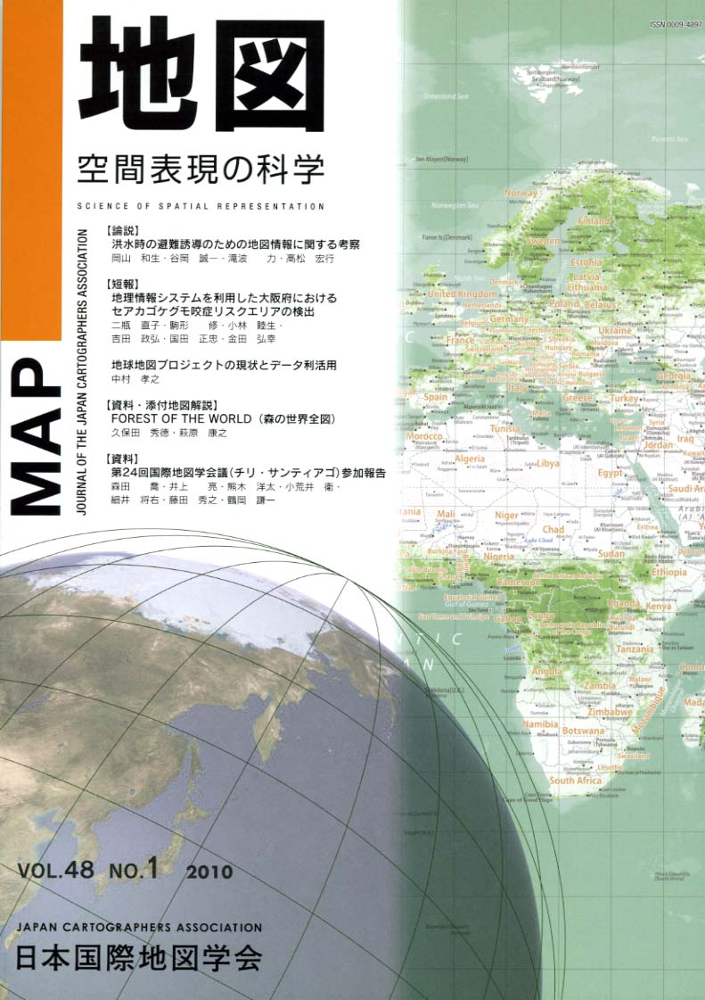

≪No.48 No.1 添付地図≫

本図を許可なく複製・利用することを禁止します。
| 最 新 号 | バックナンバー | 添付地図目録 | 投 稿 規 程 |
Vol.48 No.1 （通巻１８９号） ２０１０年
| 【論説】 | 洪水時の避難誘導のための地図情報に関する考察 | 岡山和生・谷岡誠一・滝波 力・高松宏行 |
| キーワード：洪水災害、浸水情報、避難行動、避難情報、リアルタイムハザードマップ | ||
| 【短報】 | 地理情報システムを利用した大阪府におけるセアカゴケグモ咬症リスクエリアの検出 | 二瓶直子・駒形 修・小林睦生・吉田政弘・国田正忠・金田弘幸 |
| キーワード：セアカゴケクモ、咬症、リスクエリア、大阪府、地理情報システム | ||
| 地球地図プロジェクトの現状とデータ利活用 | 中村孝之 | |
| キーワード：地球地図、国際協力、地球環境問題、地球地図第1版、土地被覆、樹木被覆率 | ||
| 【資料・添付地図解説】 | FOREST OF THE WORLD（森の世界全図） | 久保田秀徳・萩原康之 |
| キーワード：地図デザイン、地球地図、樹木被覆率、インデックスカラー、画像処理 | ||
| 【資料】 | 第24回国際地図学会議（チリ・サンティアゴ）参加報告 | 森田 喬・井上 亮・熊木洋太・小荒井 衛・細井将右・藤田秀之・鶴岡謙一 |
| キーワード：ＩＣＡ、ＩＣＣ、国際地図学会議、チリ、サンティアゴ | ||
| 【書評・紹介】 | 地図だけが知っている日本100年の変貌 | 佐藤 潤 |
| 【特別会員のページ】 | 昇寿チャート株式会社 | |
| 株式会社グローバル・プランニング | ||
| 【学会記事】 | ||
| 【添付地図】 | FOREST OF THE WORLD（森の世界全図） | |
|
≪No.48 No.1 表紙≫ |
|
|  |
|
|
|
≪No.48 No.1 添付地図≫ |
|
本図を許可なく複製・利用することを禁止します。
|